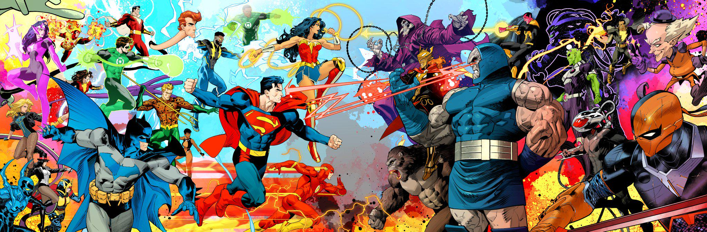

What Makes Someone a Hero?
A hero is not defined only by special powers. Heroes choose to help people, face difficult problems, and keep trying when things go wrong.
THE GREAT COMIC DEBATE
Why DC Is Better Than Marvel
Marvel has entertaining heroes, but I think DC is better. DC heroes feel like modern legends. Superman represents hope, Batman proves that intelligence and preparation can be superpowers, Wonder Woman stands for truth, and the Flash keeps moving forward even after terrible losses.
DC also has unforgettable places like Gotham City, Metropolis, Themyscira, and Central City. Its villains challenge the heroes physically and morally. Most importantly, DC stories ask what powerful people should do with their abilities—not just what they can do.
That is why DC wins for me. Marvel fans are still welcome!